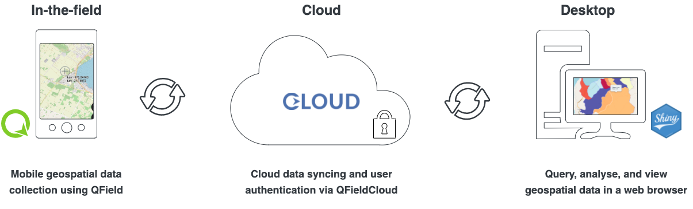
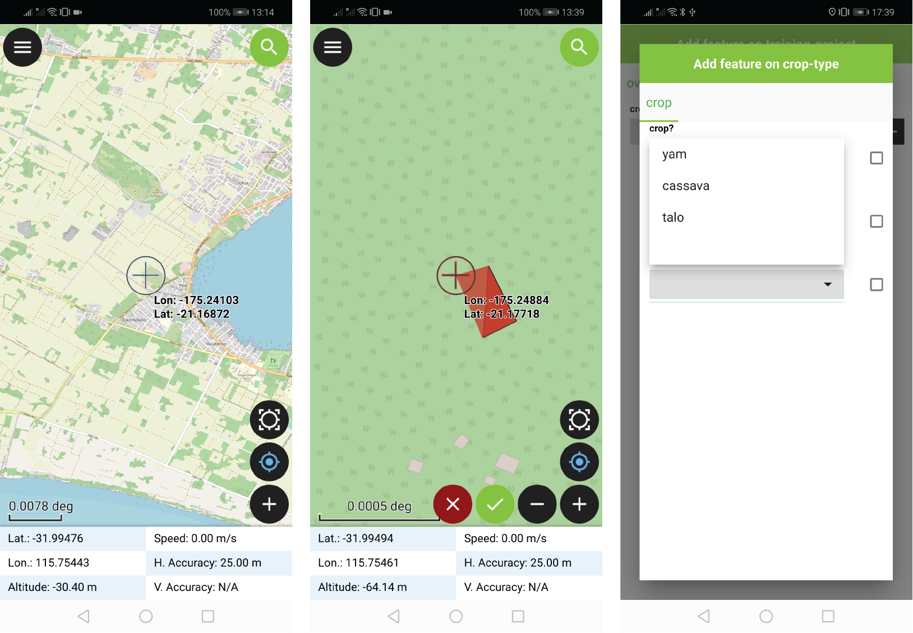
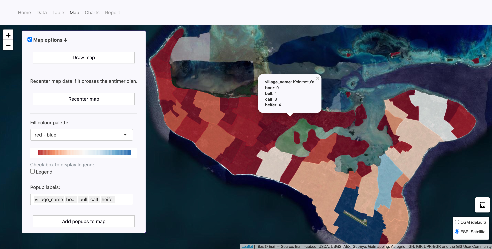
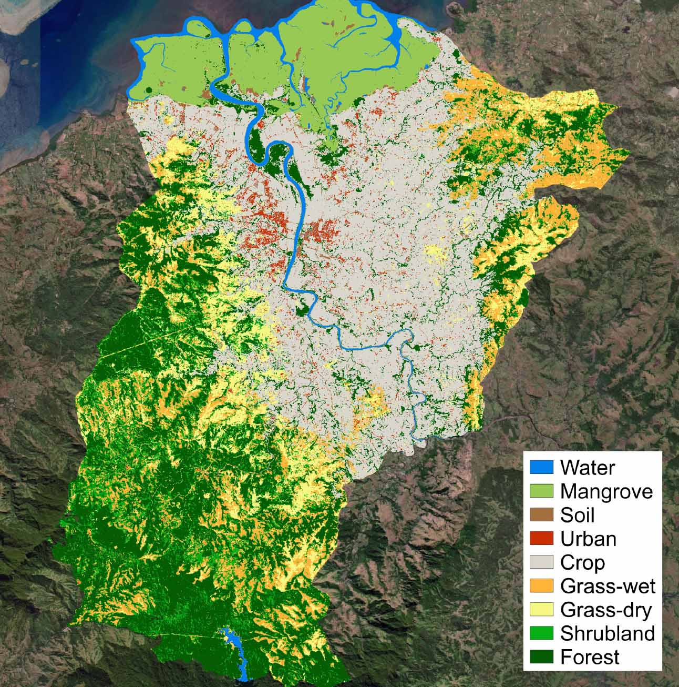
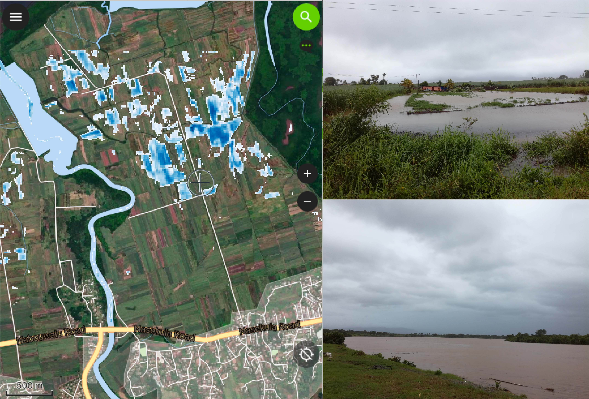
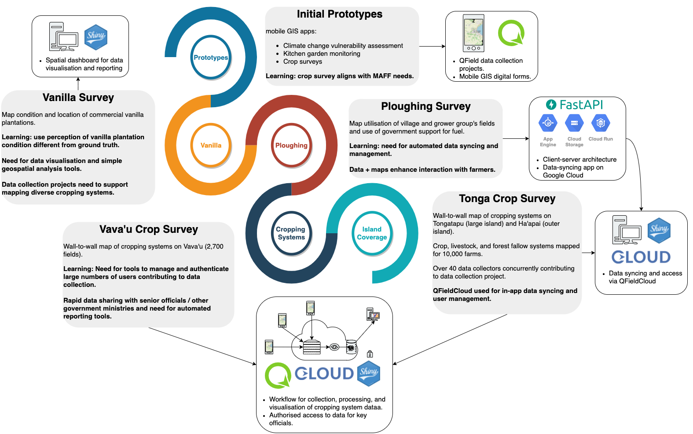
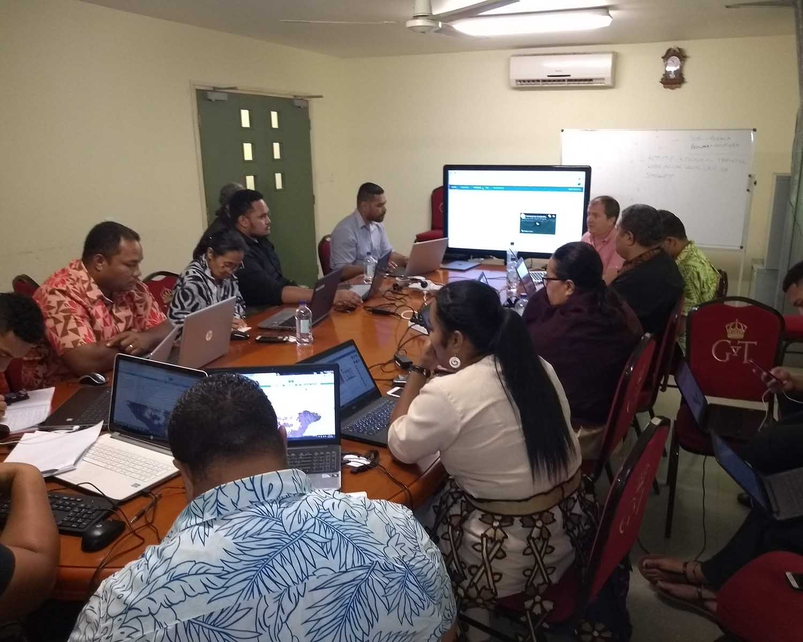
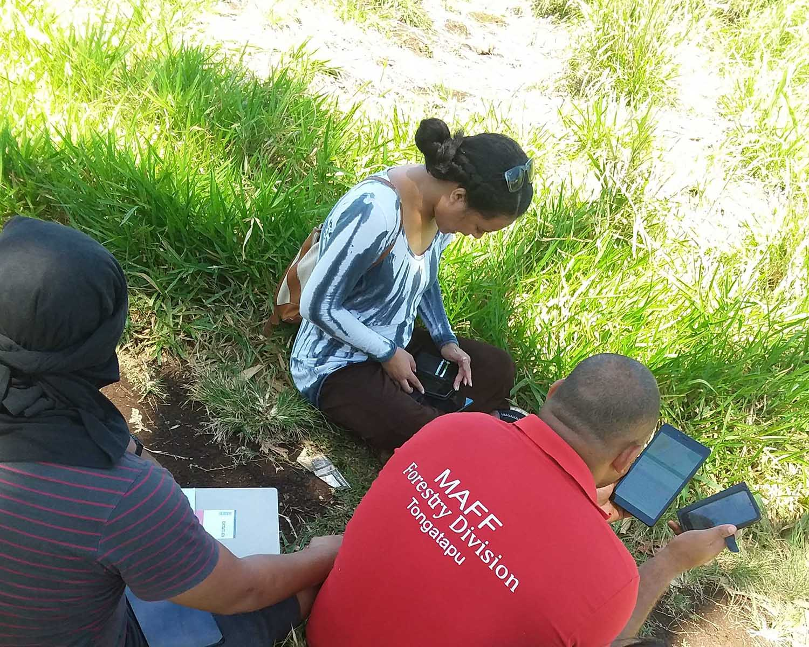

Research
In Pacific Island Countries, the environmental resources that support livelihoods are distributed across landscapes in a mix of spatial patterns.
Capturing this spatial detail in landscape use is important to inform landscape management, monitoring of programs and policies, and understanding change in environmental resources and rural livelihoods.
This research uses a collaborative software development methodology ICT4D to:
- develop a workflow for mapping and monitoring agricultural landscapes and farming systems at fine spatial resolutions.
- develop tools for spatial and non-spatial data collection using phones and tablets.
- build the capacity of landscape stakeholders to use GIS and geospatial data for landscape management.
Read the maplandscape paper presented at FOSS4G 2022 for all the details.
maplandscape
maplandscape is a workflow for:
- field-based mapping and survey data collection.
- using field data for monitoring, management, and decision making.

Field data collection
Over 100 mobile GIS data collection apps were reviewed against a set of technical criteria and criteria defined by stakeholders and end-user requirements.
QField was identified as the most suitable app for capturing geospatial information in-the-field.
QField is open-source and integrates easily with relational databases, supports viewing spatial layers in-the-field, and provides a touch-optimised map interface for digitising spatial features and digital forms for capturing attribute and non-spatial data.
QField provides functionality for online and offline data collection.

Head to the docs to find tutorials and learning resources for setting up your own data collection projects.
Managing teams and projects
QFieldCloud, an open-source Django web service app developed by OPENGIS.ch, is used to manage users and data collection projects.
QFieldCloud provides tools for managing users and collaborators on data collection projects, secure cloud storage of project data, and keeping versions of project data. QFieldCloud API can be used to build custom web applications that use field data.
QFieldCloud’s push changes mode allows data collectors operating in low bandwidth environments to back up their local data oto the cloud avoiding a data heavy full project synchronisation.
Analysis and visualisation
Using QFieldCloud’s API, web applications have been developed to allow non-GIS experts to analyse QField data in their web browser.
These applications make QField data quickly accessible to decision makers and data can be viewed and analysed on web maps, interactive tables, and charts.
There are tools for automated reporting from QField data and geospatial and relational database analysis operations can be accessed via simple user interface.

Landscape mapping with satellites
To map landscapes at large scales and quickly, we’ve developed a machine learning algorithm that can generate inter-annual land cover maps at a 10 m spatial resolution using ESA Sentinel-2 images and ancillary datasets.

Initial field validation of this method has been undertaken in Ba, Fiji, using QField and in collaboration with the Ministry of Forests Forest Resource and Assessment Group (FRAC) and Fiji’s Ministry of Agriculture as part of a Climate Change AI Innovation Grant.
These land cover maps are being integrated with the maplandscape workflow as part of a system to generate cropland flood maps after Tropical Cyclone events in Fiji which are used base layers in QField for conducting damage assessments.

Collaborative Development
maplandscape was developed using an ICT4D process. It’s a field validated framework for developing ICT systems in contexts where previously there was not a history or culture of using digital technologies.
The ICT4D process covers the ICT sytem deployment lifecycle from identifying end user needs and requirements through to deployment and ensuring sustained uptake. It’s collaborative process that draws upon agile software development and action research.
maplandscape was developed over several years with developers, resaerchers, GIS analysts, and end users from Tonga’s Ministry of Agriculture, Food, and Forests collaborating, designing and testing prototype applications, and refining requirements.
The maplandscape workflow was designed and developed iteratively starting with identifying requirements for in-the-field data collection through to scaling up the system to support large teams and building tools to make field data quickly accessible for decision makers.

Training
We develop training materials and deliver workshops to build the capacity of landscape stakeholders to use GIS applications to collect geospatial data and support landscape decision making and management.
We have run training sessions and workshops with officials from government ministries, NGOs, and other landscape stakeholders.
All the training materials are freely available online and you can follow a set of tutorials to set up a data collection project with QField, share it with your team, and view your field data on web maps.

